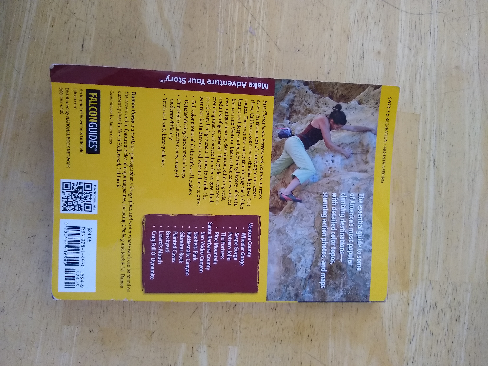
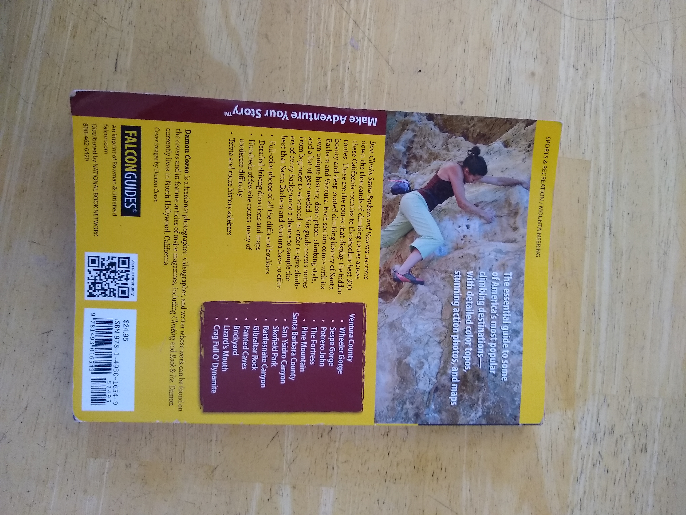
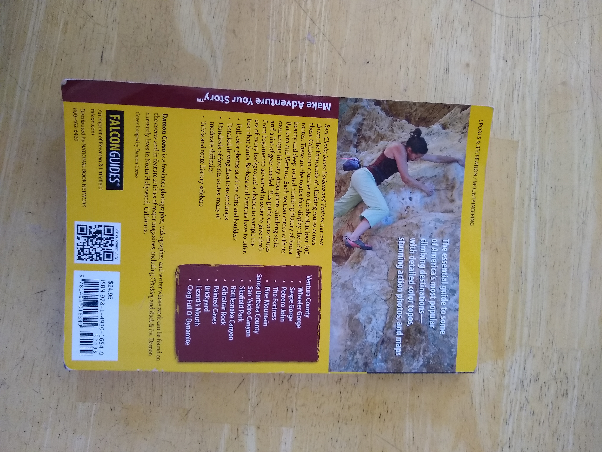

The yellow is a 7.8 mm Tendon Master (manufactured in 2013) and the blue/red is a Mammuth Phoenix bought in 2013. Both are 60m long and well used; the last time I climbed with them was in August 2018. Though, I would still climb with them, I would not recommend that. However they might be still good well usable for other purposes.

 
